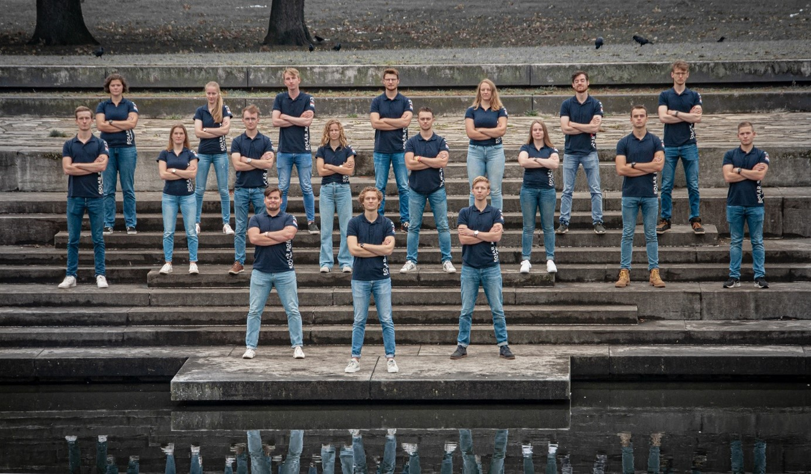

Solar Boat Twente
Renewable energy in the maritime sector
About Solar Boat Twente
Solar Boat Twente is a team of highly motivated students from the University of Twente and Saxion University of Applied Sciences. We aim to build the fastest and most efficient solar powered boat in the world. To prove this, we compete in races such as the Solar Sport One competition, the Dutch Solar Boat Championships and most importantly: the Monte Carlo Solar & Energy Boat Challenge in Monaco (also known as the World Championships or the MCSEBC).
In order to compete with the best, we developed a hydro foiling boat designed to be as light and efficient as possible. This means that we use a set of 3 wings to generate enough ‘lift’ to raise the hull of our boat above the water surface, drastically reducing the drag forces and allowing us to almost double our speed. In order to ‘fly’ as efficiently as possible, we are developing an electronic control system to alter the wing geometry to a point where stable flight is achieved.
At Solar Boat Twente, we design everything in house in order to fulfil our specific needs, this means making our own Solar Panels, building our own battery, designing our own propellers, etc. To find out more about the technical side of our boat, feel free to visit www.solarboattwente.nl.
Our Mission
Founded in 2016, Solar Boat Twente has been a place where technical student can explore the world of innovation and high-tech solutions for technical solutions that add on to their regular study programs. However, innovation is not our only goal with this project. Using the innovations, we come up with and the platform that is created by our project, Solar Boat Twente is eager to inspire the maritime sector to become more sustainable. Hence our mission: Innovation to Inspire the maritime sector.
The current state of the maritime sector is not nearly where it should, and more importantly, could be. Across the globe, numerous organisations are trying to come up with solutions to make the sector more sustainable, yet greenhouse gas numbers are still frightening. Where the automotive and aviation sectors are well known on the topic of pollution but also the energy transition, the maritime sector still falls behind. One challenge is that the sectors named earlier is much more relatable to the general public than the maritime sector is: more people drive electric cars these days and people stop flying to their holiday destinations if it is a short distance. However, the maritime sector is much more unknown, people generally do not have a direct link with it, even though a significantly large percentage of goods from for example Asia that are shipped to Europe are transported via enormous polluting ships.
Solar Boat Twente wants to make the general public realise how the maritime sector is as relatable as for example the automotive sector, in order to stimulate and inspire the sector to improve and innovate. We do this by doing what we do best as technical students: being creative and coming up with progressive solutions: we use Innovation to Inspire.